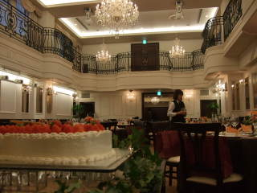
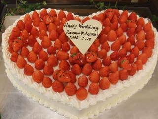
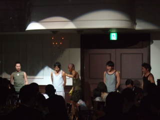
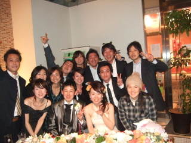

尿瓶に溢れるほどの愛情を・・・
下品なタイトルで失礼致します。
実はこの文章。昨日の同期の結婚式で新郎の取引先から来ていた祝電から抜粋
奥様が看護士さ
ん
だと言う事でとっても面白い祝電が届いていました！
新郎がぜひとも読んで欲しい！と言うので、読ませて頂きました。
それにしても連想が面
白かったです。
ケンカをしても聴診器のごとく新婦に耳を傾け・・・
ペンライトのごとくお互いの道を照らし合い・・・など
と、
こんな形で取引先の方からもとっても愛されている新郎。
昨日の披露宴は、大
阪セントバース教会で行われました
 パーティー会場
ウエディングケーキの苺にはお顔が！
新婦のリクエストです。可愛いでしょッ
☆

披露宴では、キャンドルリレーやラッキードラジェ
全員写真など、ゲストと一つになりたい！
そんな二人の
気持ちのこもった進行でした。
キャンドルリレーは私の大好きな演出でもあるのですが、
全員のキャンドルに灯が灯された時、会場が
キラキラと輝き
とっても温かい雰囲気になるんです！
そして願いを込めて封じ込める。。。幻想的な一瞬です
パーティーの中
で盛り上がりをみせるところと言えばゲストの余興！
余興の内容で二人がどれだけ愛されているか感じるのは私だけでしょうか？
昨日は本当に
手の込んだ余興ばっかり。すばらしいの一言です！
毎回のことながら、うちの同期達も東京・大阪で当日練習のみでしたが、
とっても面白い仕
上がりでしたよ！
 ビリー入隊風景（笑）
両家のお父様には入隊して頂き、感謝です！
照れくささを前面に出して
い
た新郎の姿が微笑ましかったです。
仕事中は結構シリアスな顔をしてるからなぁ～
私にとっても思い出に残る披露宴となりました。
さ
て、司会の大役を終え、2次会では久しぶりの同期集合でとっても
楽しい時間を過ごせましたッ！
先ほどの祝電を送ってくださった取引先の皆
さんにも参加して頂き、
そしてすばらしいパフォーマンスまでして頂き、笑いっぱなしでした。
 同期集合♪
次は誰の結婚式で集合できるかなぁ～？
こうしてみんなでお祝い出来るのって素
敵
なことです。
外は寒いけれど、心はとても温かくなった1日でした。
たっ
くん・あゆみさん！お幸せに～
そして、今後とも公私共によろしくお願いします♪
| 固
定リンク
 |
|
「Ｆｒｉｅｎｄ’ｓ Wedding」カテゴリの記事
- (2009.10.24)
- 和 の御披露(2009.10.16)
- ま た声が枯れるほど騒ごうね(2009.02.24)
- 笑 顔いっぱいのWeddingParty(2009.02.22)
- 笑 京都！ご披露宴(2008.11.22)
「ＭＣ：Wedding」カテゴリの記事
- (2009.10.24)
- 晴 天記録更新中☆(2009.10.18)
- 和 の御披露(2009.10.16)
- ブ ライダルブログスタート！！(2009.10.28)
- 教 会の前で…(2009.10.03)

{kind=link}
{kind=link}
{kind=link}
{kind=link}
{kind=link}
{kind=link}
{kind=link}
{kind=link}
{kind=link}
{kind=link}
{kind=link}
コメント
→あやのすけ
ホントにとっても楽しい披露宴だったよ～
それより何よりたっくんが今までにないくらい
幸せそうな顔をしていたのが印象的だった！
あさってからは、新婚旅行なんでお留守番頑張るわ～☆
投稿： ＭＡＹＵＭＩ | 2008年1月24日 (木) 18時14分
同期って一体誰かしら？
と気になっていたのです。
写真見て驚きました。
おめでとうございます！
まゆみさんも大役お疲れ様でした。
見事な司会姿が目に浮かびます。
ほんとに楽しそうな結婚式ですね。
ビリー、見たかったです・笑
投稿： あやのすけ | 2008年1月23日 (水) 06時39分